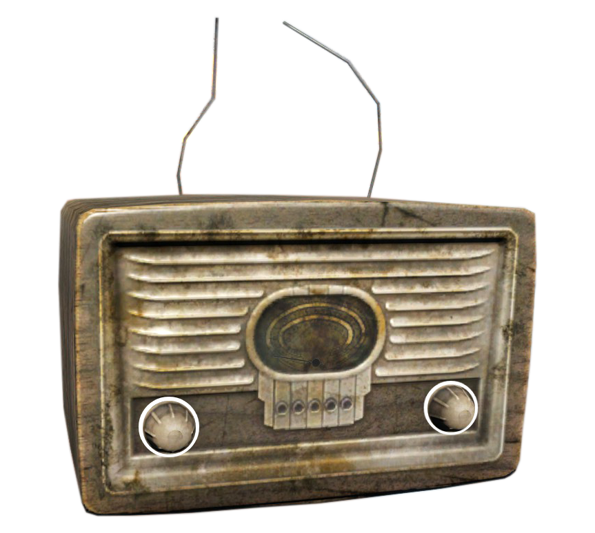

Please do not use this browser, this app need a working browser for Html5, Css, JavaScript and jQuery.
fallout-radio-rework
No station
Select a station
Volume
Go to station menu
Close menu
Station
Go to volume menu
Close menu
fallout-radio-rework

No station
Volume
Station
How can I use it ?
Just interact with buttons on the radio to listen to a station.
>
Open source code
>
The original Fallout.FM
(love on you guys)
>
valsan-azerty-boi
_
2022